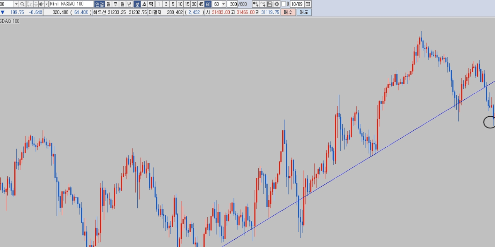
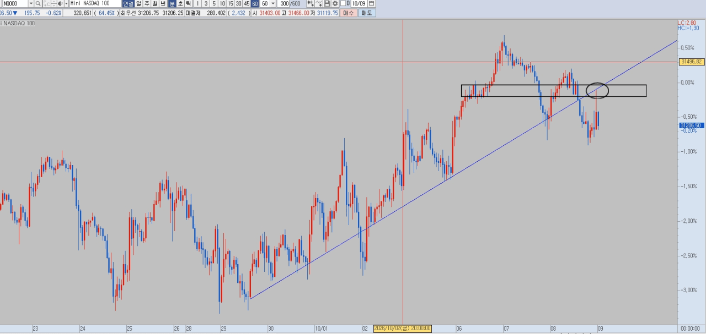
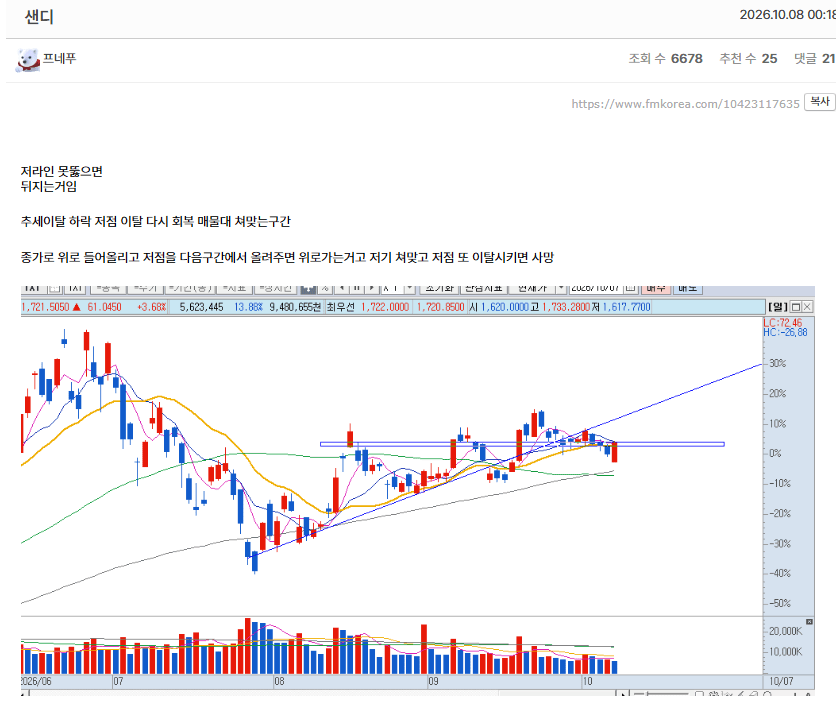
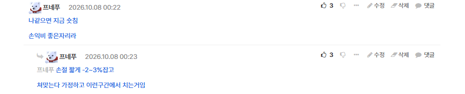
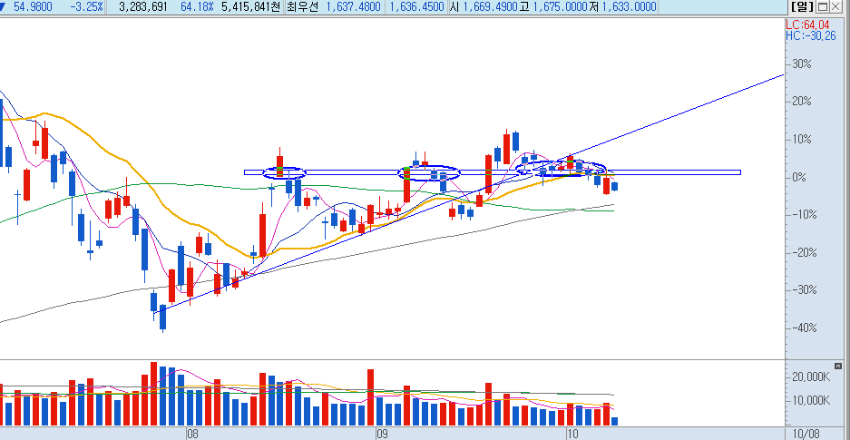
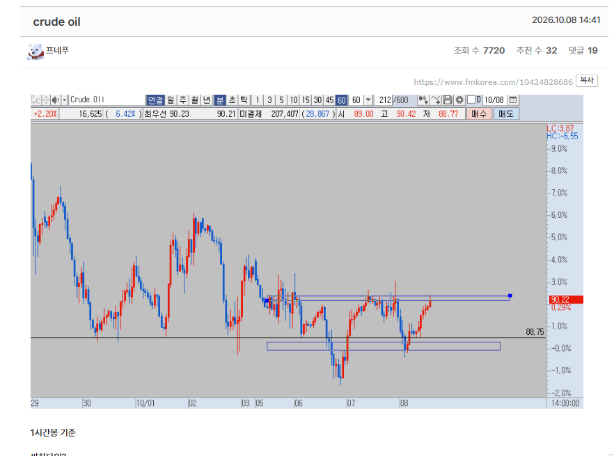
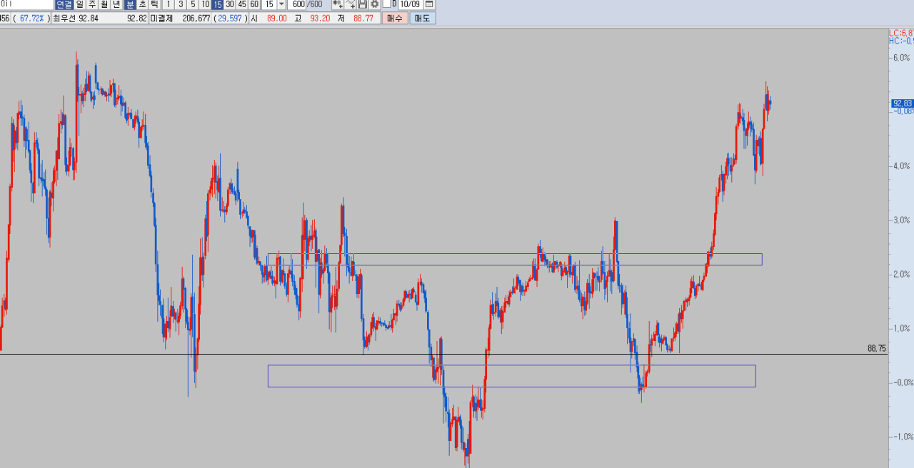

숏 선물기준 1차매수를 한 이유는 계속 말한대로 추세 지지 이후 이탈 하고 저점이 깨져서 1차매수

다시한번 추세라인터치 감안하고 적게먹더라도 2차매수는 추세라인에

이런식으로 시나리오를 만들고 분할매수로 숏이던 롱이던 하면 됩니다. 기준이 있으면 기계적으로 매매할수있어서 샌디스크 기준 어제 숏친이유

시나리오 미리 써두고

쳐맞는다 가정하고 다시 뚫리면 손절치면되니까 숏포지션 가져감 .. 그리고 오늘?

이탈 끝 크루드오일

저점 이탈 후 위로 한번 훑어주고 내려가는데 저점을 올려준다음 다시 상단을 때린다? 이상하지 저기 돌파나오면 시세나오는구간이라

슈팅. 끝